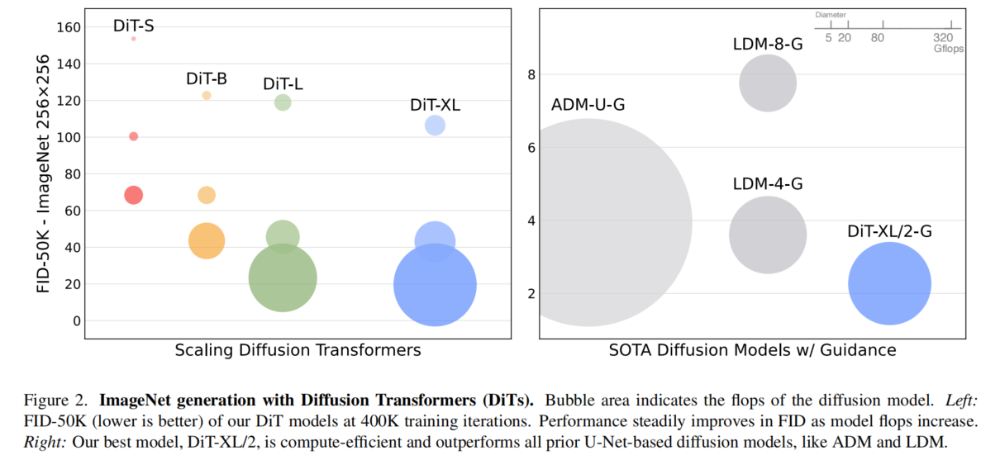
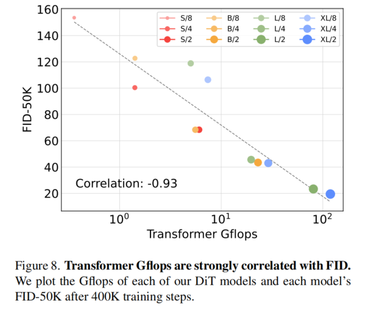
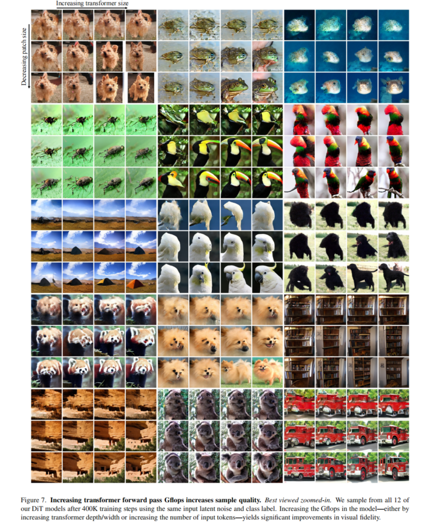
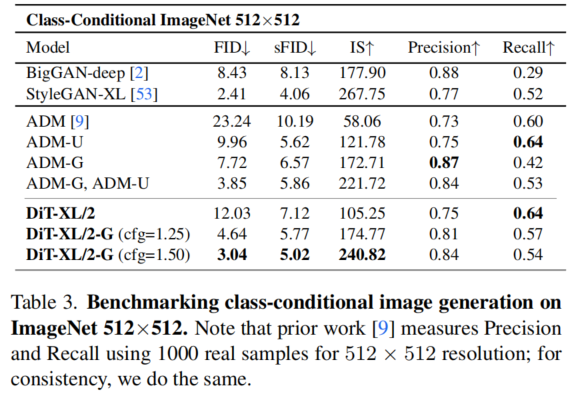

全文翻译
摘要
我们探索了一类基于Transformer架构的新型扩散模型。我们训练图像的潜在扩散模型，用在潜在图像块上操作的Transformer替换常用的U-Net骨干网络。我们通过以每秒千兆次浮点运算（Gflops）衡量的前向传递复杂度，分析了我们的扩散Transformer（DiT）的可扩展性。我们发现，具有更高Gflops的DiT模型——通过增加Transformer的深度、宽度或增加输入令牌的数量——始终具有更低的FID（弗雷歇初始距离，Frechet Inception Distance）。除了具有良好的可扩展性，我们最大的DiT-XL/2模型在类条件ImageNet 512×512和256×256基准测试中优于所有先前的扩散模型，在后者上实现了2.27的最先进FID分数。
 |
| 图1. 以Transformer为骨干网络的扩散模型实现了最先进的图像质量。我们展示了分别在512×512和256×256分辨率下，于ImageNet上训练的两个类条件DiT-XL/2模型的精选样本。 |
1. 引言
机器学习正经历一场由Transformer推动的复兴。在过去五年里，自然语言处理[8, 42]、计算机视觉[10]等多个领域的神经架构在很大程度上已被Transformer[60]所取代。然而，许多类图像级生成模型却未跟上这一趋势——尽管Transformer在自回归模型[3, 6, 43, 47]中得到广泛应用，但在其他生成建模框架中的应用却较少。例如，扩散模型一直处于图像级生成模型近期进展的前沿[9, 46]；然而，它们都采用卷积U-Net架构作为事实上的骨干网络选择。
Ho等人的开创性工作[19]首次将U-Net骨干网络引入扩散模型。U-Net最初在像素级自回归模型和条件生成对抗网络（GANs）[23]中取得成功，它从PixelCNN++[52, 58]继承而来，并做了一些改动。该模型是卷积式的，主要由残差网络（ResNet）[15]块组成。与标准U-Net[49]不同，在较低分辨率层穿插了额外的空间自注意力块，这是Transformer的重要组成部分。Dhariwal和Nichol[9]对U-Net的多个架构选择进行了消融实验，比如使用自适应归一化层[40]注入条件信息，以及卷积层的通道数设置等。不过，Ho等人提出的U-Net的高层设计在很大程度上保持不变。
通过这项工作，我们旨在揭示扩散模型中架构选择的重要性，并为未来的生成建模研究提供实证基线。我们证明了U-Net的归纳偏差对扩散模型的性能并非至关重要，并且可以很容易地用Transformer等标准设计来替代。因此，扩散模型有望从最近的架构统一趋势中受益，例如，从其他领域继承最佳实践和训练方法，同时保留可扩展性、稳健性和效率等优良特性。标准化的架构也将为跨领域研究开辟新的可能性。
在本文中，我们专注于一类基于Transformer的新型扩散模型，称之为扩散Transformer，简称DiT。DiT遵循视觉Transformer（ViT）[10]的最佳实践，事实证明，与传统卷积网络（如ResNet[15]）相比，ViT在视觉识别方面的扩展性更强。
更具体地说，我们研究Transformer在网络复杂度与样本质量方面的缩放行为。通过在潜在扩散模型（LDMs）[48]框架下构建和基准测试DiT的设计空间，我们成功地用Transformer替换了U-Net骨干网络，其中扩散模型在变分自编码器（VAE）的潜在空间内进行训练。我们进一步表明，DiT是扩散模型的可扩展架构：网络复杂度（以Gflops衡量）与样本质量（以FID衡量）之间存在很强的相关性。通过简单地扩展DiT，并使用高容量骨干网络（118.6 Gflops）训练LDM，我们在类条件256×256 ImageNet生成基准测试中实现了2.27的最先进FID结果。
2. 相关工作
- Transformer：Transformer[60]已在语言、视觉[10]、强化学习[5, 25]和元学习[39]等领域取代了特定领域的架构。在语言领域，随着模型规模、训练计算量和数据量的增加，Transformer展现出了卓越的缩放特性，这在通用自回归模型[17]和视觉Transformer（ViT）[63]中均有体现。除语言领域外，Transformer还被用于自回归预测像素[6, 7, 38]。此外，Transformer也在离散码本上进行训练，既作为自回归模型[11, 47]，也作为掩码生成模型[4, 14]，前者在高达200亿参数规模下仍表现出出色的缩放特性[62]。最后，Transformer已在去噪扩散概率模型（DDPM）中得到探索，用于合成非空间数据，例如在DALL·E 2中生成CLIP图像嵌入[41, 46]。在本文中，我们研究Transformer作为图像扩散模型骨干网络时的缩放特性。
- 去噪扩散概率模型（DDPMs）：扩散模型[19, 54]和基于分数的生成模型[22, 56]在图像生成模型方面取得了显著成功，在许多情况下超越了此前作为最先进模型的生成对抗网络（GANs）[12]。在过去两年中，DDPM的改进主要得益于采样技术的提升[19, 27, 55]，其中最显著的是无分类器引导[21]、将扩散模型重新表述为预测噪声而非像素[19]，以及使用级联DDPM管道，即低分辨率基础扩散模型与上采样器并行训练[9, 20]。对于上述所有扩散模型，卷积U-Nets[49]是事实上的骨干网络架构选择。同期工作[24]引入了一种基于注意力机制的新颖高效架构用于DDPM；而我们探索的是纯Transformer架构。
- 架构复杂度：在图像生成文献中评估架构复杂度时，使用参数数量是相当常见的做法。一般来说，参数数量并不能很好地代表图像模型的复杂度，因为它没有考虑到图像分辨率等因素，而图像分辨率对模型性能有显著影响[44, 45]。因此，本文中大部分模型复杂度分析是通过理论Gflops（每秒数十亿次浮点运算）进行的，这与架构设计文献中广泛使用Gflops来衡量复杂度的做法一致。实际上，黄金复杂度指标仍存在争议，因为它通常取决于特定的应用场景。Nichol和Dhariwal改进扩散模型的开创性工作[9, 36]与我们的研究最为相关，他们在其中分析了U-Net架构类别的可扩展性和Gflop特性。在本文中，我们关注的是Transformer类别。
3.1 预备知识
- 扩散公式：在介绍我们的架构之前，我们简要回顾一些理解扩散模型（DDPMs）所需的基本概念[19, 54]。高斯扩散模型假设一个正向加噪过程，该过程逐渐向真实数据$x_0$添加噪声：$q(x_t | x_0) = N(x_t; \sqrt{\bar{\alpha}_t} x_0, (1 - \bar{\alpha}_t) I)$，其中常数$\bar{\alpha}_t$是超参数。通过应用重参数化技巧，我们可以采样得到$x_t = \sqrt{\bar{\alpha}_t} x_0 + \sqrt{1 - \bar{\alpha}_t} \epsilon_t$，这里$\epsilon_t \sim N(0, I)$。扩散模型旨在学习反向过程，以还原正向过程造成的破坏：$p_{\theta}(x_{t - 1} | x_t) = N(\mu_{\theta}(x_t), \sum_{\theta}(x_t))$，其中神经网络用于预测$p_{\theta}$的统计量。反向过程模型通过$x_0$对数似然的变分下界进行训练[30]，简化后为，这里省略了一个与训练无关的额外项。由于和$p_{\theta}$均为高斯分布，$D_{KL}$可以通过两个分布的均值和协方差进行计算。通过将$\mu_{\theta}$重新参数化为噪声预测网络$\epsilon_{\theta}$，模型可以通过预测噪声$\epsilon_{\theta}(x_t)$与真实采样的高斯噪声$\epsilon_t$之间的简单均方误差进行训练，即$L_{simple }(\theta)=\left|\epsilon_{\theta}(x_{t})-\epsilon_{t}\right|_{2}^{2}$ 。但是，为了训练具有学习到的反向过程协方差$\sum_{\theta}$的扩散模型，需要优化完整的$D_{KL}$项。我们采用Nichol和Dhariwal的方法[36]：使用$L_{simple}$训练$\epsilon_{\theta}$，并使用完整的$D_{KL}$项训练$\sum_{\theta}$。一旦$p_{\theta}$训练完成，就可以通过初始化$x_{t_{max}} \sim N(0, I)$并通过重参数化技巧采样$x_{t - 1} \sim p_{\theta}(x_{t - 1} | x_t)$来生成新图像。
- 无分类器引导：条件扩散模型将额外信息作为输入，例如类标签$c$。在这种情况下，反向过程变为$p_{\theta}(x_{t - 1} | x_t, c)$，其中$\epsilon_{\theta}$和$\sum_{\theta}$以$c$为条件。在这种设置下，无分类器引导可用于促使采样过程找到使$log p(c | x)$较高的$x$ [21]。根据贝叶斯规则，$log p(c | x) \propto log p(x | c) - log p(x)$，因此$\nabla_{x} log p(c | x) \propto \nabla_{x} log p(x | c) - \nabla_{x} log p(x)$。通过将扩散模型的输出解释为分数函数，DDPM采样过程可以通过以下方式引导采样出具有高$p(x | c)$的$x$：$\hat{\epsilon}_{\theta}(x_t, c)=\epsilon_{\theta}(x_t, \emptyset)+s \nabla_{x} log p(x | c) \propto \epsilon_{\theta}(x_t, \emptyset)+s \cdot(\epsilon_{\theta}(x_t, c)-\epsilon_{\theta}(x_t, \emptyset))$，其中$s > 1$表示引导的强度（注意，当$s = 1$时恢复标准采样）。在训练过程中，通过随机丢弃$c$并用学习到的“空”嵌入$\theta$替换它来评估$c = \emptyset$时的扩散模型。无分类器引导在生成样本方面明显优于通用采样技术[21, 35, 46]，这一趋势在我们的DiT模型中同样适用。
- 潜在扩散模型：直接在高分辨率像素空间中训练扩散模型在计算上可能具有挑战性。潜在扩散模型（LDMs）[48]通过两阶段方法解决了这个问题：（1）学习一个自动编码器，使用学习到的编码器$E$将图像压缩为较小的空间表示；（2）训练表示$z = E(x)$的扩散模型，而不是图像$x$的扩散模型（$E$被冻结）。然后，可以通过从扩散模型中采样表示$\approx$，并随后使用学习到的解码器$x = D(z)$将其解码为图像，来生成新图像。如图2所示，LDMs在使用像ADM这样的像素空间扩散模型的一小部分Gflops的情况下，仍能取得良好的性能。由于我们关注计算效率，这使得它们成为架构探索的一个有吸引力的起点。在本文中，我们将DiT应用于潜在空间，尽管它们也可以直接应用于像素空间而无需修改。这使得我们的图像生成管道成为一种混合方法；我们使用现成的卷积VAE和基于Transformer的DDPM。
|  |
| 图2. 使用扩散Transformer（DiT）进行ImageNet图像生成。气泡面积表示扩散模型的浮点运算量（FLOPS）。左图：我们的DiT模型在40万次训练迭代时的FID-50K指标（数值越低越好）。随着模型浮点运算量的增加，FID性能稳步提升。右图：我们性能最佳的模型DiT-XL/2计算效率高，优于所有之前基于U-Net的扩散模型，如ADM和LDM。 |
我们引入扩散Transformer（DiTs），这是一种用于扩散模型的新架构。我们尽可能忠实于标准Transformer架构，以保留其缩放特性。由于我们的重点是训练图像的DDPM（具体来说，是图像的空间表示），DiT基于视觉Transformer（ViT）架构，该架构对图像块序列进行操作[10]。DiT保留了ViT的许多最佳实践。图3展示了完整DiT架构的概述。在本节中，我们描述DiT的前向传递，以及DiT类设计空间的组成部分。
|
| 图3. 扩散Transformer（DiT）架构。左图：我们训练条件潜在DiT模型。输入的潜在向量被分解为图像块，然后由多个DiT块进行处理。右图：我们的DiT块的详细信息。我们对标准Transformer块的多种变体进行了实验，这些变体通过自适应层归一化、交叉注意力机制和额外输入令牌来融入条件信息。其中，自适应层归一化的效果最佳。 |
- Patchify：DiT的输入是一个空间表示$z$（对于256×256×3的图像，$z$的形状为32×32×4）。DiT的第一层是“Patchify”，它通过对输入中的每个图像块进行线性嵌入，将空间输入转换为长度为$T$的令牌序列，每个令牌的维度为$d$。在Patchify之后，我们对所有输入令牌应用标准的ViT基于频率的位置嵌入（正弦 - 余弦版本）。Patchify创建的令牌数量$T$由图像块大小超参数$p$决定。如图4所示，将$p$减半将使$T$增加四倍，从而使Transformer的总Gflops至少增加四倍。虽然它对Gflops有显著影响，但请注意，更改$p$对下游参数数量没有实际影响。我们将$p = 2, 4, 8$添加到DiT设计空间中。
|
| 图4. DiT的输入规格。给定大小为$p×p$的图像块，形状为$I×I×C$的空间表示（来自变分自编码器的带噪潜在向量）会被“分块”成一个长度为$T=(I/p)^2$、隐藏维度为$d$的序列。图像块大小$p$越小，序列长度越长，因此每秒的浮点运算次数（Gflops）也越多。 |
- DiT块设计：在Patchify之后，输入令牌由一系列Transformer块处理。除了带噪图像输入外，扩散模型有时还会处理额外的条件信息，如噪声时间步$t$、类标签$c$、自然语言等。我们探索了四种不同的Transformer块变体，它们以不同方式处理条件输入。这些设计对标准ViT块设计进行了小而重要的修改。所有块的设计如图3所示。
- 上下文内条件：我们简单地将$t$和$c$的向量嵌入作为两个额外的令牌附加到输入序列中，将它们与图像令牌同等对待。这类似于ViT中的cls令牌，它允许我们使用标准的ViT块而无需修改。在最后一个块之后，我们从序列中删除条件令牌。这种方法为模型引入的新Gflops可以忽略不计。
- 交叉注意力块：我们将$t$和$c$的嵌入连接成一个长度为2的序列，与图像令牌序列分开。对Transformer块进行修改，在多头自注意力块之后添加一个额外的多头交叉注意力层，这类似于Vaswani等人的原始设计[60]，也类似于LDM用于对类标签进行条件处理的设计。交叉注意力为模型增加了最多的Gflops，大约有15%的额外开销。
- 自适应层归一化（adaLN）块：随着自适应归一化层[40]在GANs[2, 28]和基于U-Net骨干网络的扩散模型[9]中的广泛应用，我们探索用自适应层归一化（adaLN）替换Transformer块中的标准层归一化层。与直接学习逐维度的缩放和偏移参数$\gamma$和$\beta$不同，我们从$t$和$c$的嵌入向量之和中回归这些参数。在我们探索的三种块设计中，adaLN增加的Gflops最少，因此是计算效率最高的。它也是唯一一种对所有令牌应用相同函数的条件机制。
- adaLN-Zero块：先前关于ResNets的工作发现，将每个残差块初始化为恒等函数是有益的。例如，Goyal等人发现，在监督学习设置中，将每个块的最终批归一化缩放因子$\gamma$初始化为零可以加速大规模训练[13]。扩散U-Net模型使用类似的初始化策略，在任何残差连接之前，将每个块的最终卷积层初始化为零。我们探索了adaLN DiT块的一种修改，采用了相同的方法。除了回归$\gamma$和$\beta$，我们还回归逐维度的缩放参数$\alpha$，该参数在DiT块内的任何残差连接之前立即应用。我们将MLP初始化为输出所有$\alpha$的零向量；这将整个DiT块初始化为恒等函数。与普通adaLN块一样，adaLN-Zero为模型增加的Gflops可以忽略不计。我们将上下文内条件、交叉注意力、自适应层归一化和adaLN-Zero块包含在DiT设计空间中。
- 模型大小：我们应用一系列$N$个DiT块，每个块在隐藏维度大小$d$下运行。遵循ViT，我们使用标准的Transformer配置，共同缩放$N$、$d$和注意力头数[10, 63]。具体来说，我们使用四种配置：DiT-S、DiT-B、DiT-L和DiT-XL。它们涵盖了广泛的模型大小和计算量分配，从0.3到118.6 Gflops，使我们能够评估缩放性能。表1给出了这些配置的详细信息。我们将B、S、L和XL配置添加到DiT设计空间中。
 |
| 表1. DiT模型的详细信息。我们遵循视觉Transformer（ViT）[10]的模型配置来设置小型（S）、基础（B）和大型（L）变体；我们还引入了超大（XL）配置作为我们最大的模型。 |
- Transformer解码器：在最后一个DiT块之后，我们需要将图像令牌序列解码为输出噪声预测和输出对角协方差预测。这两个输出的形状都与原始空间输入相同。我们使用标准的线性解码器来完成此操作；我们应用最终的层归一化（如果使用adaLN则为自适应的），并将每个令牌线性解码为一个$p×p×2C$的张量，其中$c$是DiT空间输入中的通道数。最后，我们将解码后的令牌重新排列为其原始空间布局，以获得预测的噪声和协方差。我们探索的完整DiT设计空间包括图像块大小、Transformer块架构和模型大小。
4. 实验设置
我们探索了DiT的设计空间，并研究了模型类别的缩放特性。我们的模型根据其配置和潜在图像块大小$p$来命名，例如，DiT-XL/2指的是XLarge配置且$p = 2$。
- 训练：我们在ImageNet数据集[31]上训练类条件潜在DiT模型，图像分辨率为256×256和512×512，这是一个竞争激烈的生成建模基准。我们将最终的线性层初始化为零，除此之外，使用ViT的标准权重初始化技术。我们使用AdamW[29, 33]训练所有模型。我们使用$1×10^{-4}$的恒定学习率，不使用权重衰减，批量大小为256。我们仅使用的一种数据增强方法是水平翻转。与许多之前使用ViT的工作[57, 61]不同，我们发现训练DiT达到高性能并不需要学习率热身或正则化。即使没有这些技术，在所有模型配置下训练都非常稳定，我们也没有观察到训练Transformer时常见的损失激增现象。按照生成建模文献中的常见做法，我们在训练过程中对DiT权重保持指数移动平均（EMA），衰减率为0.9999。所有报告的结果均使用EMA模型。我们对所有DiT模型大小和图像块大小使用相同的训练超参数。我们的训练超参数几乎完全沿用自ADM。我们没有调整学习率、衰减/热身调度、Adam的$\beta_1$ / $\beta_2$或权重衰减。
- 扩散：我们使用来自Stable Diffusion[48]的现成预训练变分自编码器（VAE）模型[30]。VAE编码器的下采样因子为8，给定形状为256×256×3的RGB图像$x$，$z = E(x)$的形状为32×32×4。在本节的所有实验中，我们的扩散模型都在这个$z$空间中运行。从我们的扩散模型中采样出新的潜在向量后，我们使用VAE解码器$x = D(z)$将其解码为像素。我们沿用ADM[9]的扩散超参数；具体来说，我们使用$t_{max} = 1000$的线性方差调度，范围从$1×10^{-4}$到$2×10^{-2}$，ADM对协方差$\sum_{\theta}$的参数化，以及他们对输入时间步和标签的嵌入方法。
- 评估指标：我们使用弗雷歇初始距离（FID）[18]来衡量缩放性能，这是评估图像生成模型的标准指标。在与先前工作进行比较时，我们遵循惯例，报告使用250步DDPM采样的FID-50K。FID对小的实现细节很敏感[37]；为确保准确比较，本文中报告的所有值都是通过导出样本并使用ADM的TensorFlow评估套件[9]获得的。除非另有说明，本节中报告的FID值均未使用无分类器引导。我们还报告了初始得分（Inception Score）[51]、sFID[34]和精度/召回率（Precision/Recall）[32]作为次要指标。
- 计算：我们使用JAX[1]实现所有模型，并使用TPU-v3计算集群进行训练。DiT-XL/2是我们计算量最大的模型，在全局批量大小为256的TPU v3 - 256计算集群上，其训练速度约为每秒5.7次迭代。
5. 实验
- DiT块设计：我们训练了四个计算量最高的DiT-XL/2模型，每个模型使用不同的块设计——上下文内条件（119.4Gflops）、交叉注意力（137.6Gflops）、自适应层归一化（adaLN，118.6Gflops）或adaLN-Zero（118.6Gflops）。我们在训练过程中测量FID。图5展示了结果。adaLN-Zero块在计算效率最高的同时，产生的FID比交叉注意力和上下文内条件都低。在400K次训练迭代时，adaLN-Zero模型实现的FID几乎是上下文内模型的一半，这表明条件机制对模型质量有至关重要的影响。初始化也很重要——将每个DiT块初始化为恒等函数的adaLN-Zero，明显优于普通的adaLN。在本文的其余部分，所有模型都将使用adaLN-Zero DiT块。
|
| 图5. 不同条件策略的比较。在训练的各个阶段，adaLN-Zero的表现均优于交叉注意力和上下文内条件策略。 |
- 增加Transformer大小和减小图像块大小：我们训练了12个DiT模型，涵盖不同的模型配置（S、B、L、XL）和图像块大小（8、4、2）。需要注意的是，DiT-L和DiT-XL在相对计算量方面比其他配置更为接近。图2（左）概述了每个模型的计算量以及它们在400K次训练迭代时的FID。在所有情况下，我们发现增加模型大小和减小图像块大小都能显著改进扩散模型。图6（上）展示了在保持图像块大小不变的情况下，随着模型大小增加，FID如何变化。在所有四种配置中，通过加深和加宽Transformer，在训练的各个阶段都能显著提高FID。同样，图6（下）展示了在保持模型大小不变的情况下，随着图像块大小减小，FID的变化。我们再次观察到，在训练过程中，仅通过缩放DiT处理的令牌数量（参数大致固定），就能显著提高FID。DiT的计算量对于提高性能至关重要。图6的结果表明，参数数量并不能唯一决定DiT模型的质量。当保持模型大小不变并减小图像块大小时，Transformer的总参数实际上略有减少，但只有计算量增加了。这些结果表明，缩放模型的计算量实际上是提高性能的关键。为了进一步研究这一点，我们在图8中绘制了400K次训练步骤时的FID-50K与模型计算量的关系。结果表明，当不同DiT配置的总计算量相似时（例如DiT-S/2和DiT-B/4），它们获得的FID值也相似。我们发现模型计算量与FID-50K之间存在很强的负相关关系，这表明增加模型的计算资源是改进DiT模型的关键因素。在附录图12中，我们发现这一趋势在其他指标（如初始得分）中也成立。
|
| 图6. 在训练的各个阶段，对DiT模型进行缩放都能提升FID。我们展示了12个DiT模型在训练迭代过程中的FID-50K指标变化。上图：在保持图像块大小不变的情况下比较FID。下图：在保持模型大小不变的情况下比较FID。对Transformer骨干网络进行缩放，在所有模型大小和图像块大小下都能产生性能更优的生成模型。 |
|  |
| 图8. Transformer的每秒浮点运算次数（Gflops）与FID（弗雷歇初始距离）密切相关。我们绘制了每个DiT模型的Gflops，以及在40万次训练步骤后每个模型的FID-50K（5万样本的FID）。 |
- 更大的DiT模型计算效率更高：在图9中，我们绘制了所有DiT模型的FID与总训练计算量的函数关系。我们将训练计算量估算为模型计算量·批量大小·训练步数·3，其中系数3大致表示反向传播的计算量是正向传播的两倍。我们发现，小型DiT模型即使训练时间更长，相对于训练步数较少的大型DiT模型，最终也会变得计算效率低下。同样，我们发现除了图像块大小不同外其他相同的模型，即使在控制训练计算量的情况下，也具有不同的性能表现。例如，在大约$10^{10}$Gflops之后，XL/4的性能不如XL/2。
|
| 图9. 更大的DiT模型能更高效地利用大量计算资源。我们绘制了FID与总训练计算量的函数关系图。 |
- 可视化缩放效果：我们在图7中可视化了缩放对样本质量的影响。在400K次训练步骤时，我们使用相同的起始噪声$x_{t_{max}}$、采样噪声和类标签，从12个DiT模型中分别采样生成图像。这使我们能够直观地理解缩放如何影响DiT的样本质量。实际上，缩放模型大小和令牌数量都能显著提高视觉质量。
|  |
| 图7. 增加Transformer前向传递的每秒浮点运算次数（Gflops）可提升样本质量。建议放大查看。我们在40万次训练步骤后，使用相同的输入潜在噪声和类别标签，从12个DiT模型中进行采样。通过增加Transformer的深度/宽度或增加输入令牌数量来提高模型的Gflops，能够显著提升视觉保真度。 |
5.1 最先进的扩散模型
- 256×256的ImageNet：在进行缩放分析之后，我们继续对计算量最高的模型DiT-XL/2进行700万步的训练。我们在图1中展示了该模型生成的样本，并与最先进的类条件生成模型进行比较。结果报告在表2中。在使用无分类器引导时，DiT-XL/2优于所有先前的扩散模型，将之前LDM达到的最佳FID-50K从3.60降至2.27。图2（右）显示，DiT-XL/2（118.6Gflops）相对于基于潜在空间U-Net的模型（如LDM-4，103.6Gflops）计算效率更高，比基于像素空间U-Net的模型（如ADM，1120Gflops或ADM-U，742Gflops）效率高得多。我们的方法在所有先前的生成模型中实现了最低的FID，包括之前最先进的StyleGAN-XL[53]。最后，我们还观察到，在所有测试的无分类器引导尺度下，DiT-XL/2比LDM-4和LDM-8具有更高的召回率。当仅训练235万步（与ADM相似）时，XL/2的FID为2.55，仍然优于所有先前的扩散模型。
|
| 表2. ImageNet 256×256分辨率下类条件图像生成的基准测试结果。DiT-XL/2达到了最先进的FID分数。 |
- 512×512的ImageNet：我们在512×512分辨率的ImageNet上训练了一个新的DiT-XL/2模型，训练300万次迭代，使用与256×256模型相同的超参数。图像块大小为2时，这个XL/2模型在对64×64×4的输入潜在向量进行分块后，总共处理1024个令牌（524.6Gflops）。表3展示了与最先进方法的比较。XL/2在这个分辨率下再次优于所有先前的扩散模型，将之前ADM达到的最佳FID从3.85提高到3.04。即使处理的令牌数量增加，XL/2仍然计算高效。例如，ADM使用1983Gflops，ADM-U使用2813Gflops；而XL/2仅使用524.6Gflops。我们在图1和附录中展示了高分辨率XL/2模型生成的样本。
|  |
| 表3. ImageNet 512×512分辨率下类条件图像生成的基准测试。请注意，先前的工作[9]在512×512分辨率下使用1000个真实样本测量精度（Precision）和召回率（Recall）；为保持一致性，我们也采用相同的做法。 |
5.2 缩放模型计算量与采样计算量
扩散模型的独特之处在于，在训练后生成图像时，它们可以通过增加采样步数来使用额外的计算资源。鉴于模型计算量对样本质量的影响，在本节中我们研究计算量较小的DiT模型是否可以通过使用更多的采样计算量来超越计算量大的模型。我们在400K次训练步骤后，对12个DiT模型分别使用[16, 32, 64, 128, 256, 1000]步采样计算FID。主要结果如图10所示。以DiT-L/2使用1000步采样和DiT-XL/2使用128步采样为例，在这种情况下，L/2每个图像的采样计算量为80.7Tflops；XL/2每个图像的采样计算量仅为其五分之一，即15.2Tflops。尽管如此，XL/2的FID-10K（23.7）仍优于L/2（25.9）。一般来说，增加采样计算量无法弥补模型计算量的不足。
|
| 图10. 增加采样计算量并不能弥补模型计算量的不足。对于我们每个训练了40万次迭代的DiT模型，我们分别使用[16, 32, 64, 128, 256, 1000]次采样步骤来计算FID-10K。对于每个采样步骤数，我们绘制出FID以及每个图像采样所使用的每秒浮点运算次数（Gflops）。小型模型即使在测试时的采样计算量比大型模型更多，也无法缩小与大型模型之间的性能差距。 |
6. 结论
我们引入了扩散Transformer（DiTs），这是一种基于Transformer的简单骨干网络，用于扩散模型。它优于先前的U-Net模型，并继承了Transformer模型出色的可扩展性。鉴于本文中令人期待的缩放结果，未来的工作应继续将DiTs扩展到更大的模型和更多的令牌数量。DiT也可以作为像DALL·E 2和Stable Diffusion这类文本到图像模型的即插即用骨干网络进行探索。